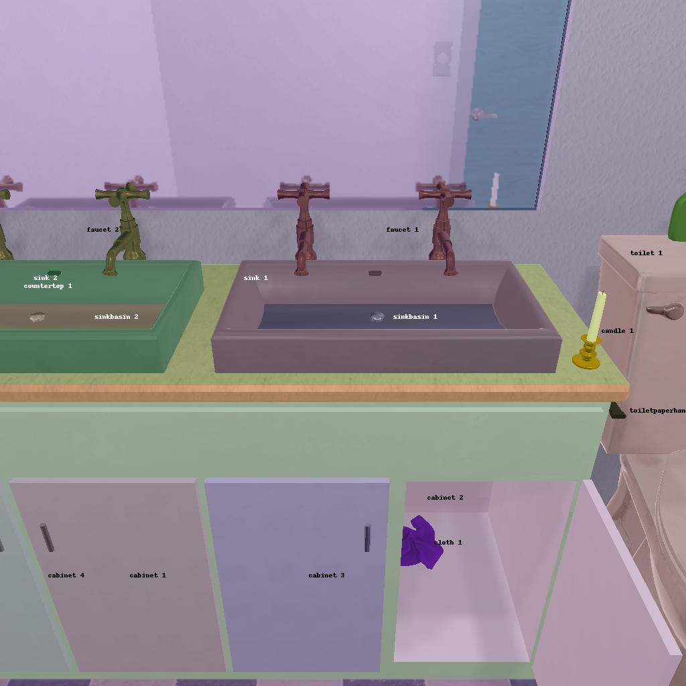

---------------------------------------------------------task: 9---------------------------------------------------------
--------------------------------------------------------------------------------------------------------------------------------------------------------------------
--------------------------------------------------------------------------------------------------------------------------------------------------------------------
Step:--------------------------------------------------------------------------2-------------------------------------------------------------------------------
----------------------------------------
VLM Prompt:
Image1:
**Instruction**
1. Analyze the provided image to identify all visible household objects, focusing on those relevant to the task description "put a soapbottle in toilet."
2. Use the analysis of the image and the task hint "The agent must find an object of the desired type, pick it up, find the correct location to place it, and put it down there." to answer the question: what is the most reasonable action in the choices for the task description "put a soapbottle in toilet"?
4. Decide and write the answer using the template: The answer is: (i): , where i is the real number. If there is no desired object in the image, search every place based on **Initial Observation** to find the object. And if no one is exactly correct, choose a similar answer.
**Initial Observation**
You are in the middle of a room. Looking quickly around you, you can see bathtub (1), bathtubbasin (1), toilet (1), cabinet (1-4), sink (1-2), countertop (1), sinkbasin (1-2), toiletpaperhanger (1), towelholder (1), garbagecan (1), handtowelholder (1)
**Answer Choices**
(1): go to bathtub 1
(2): go to bathtubbasin 1
(3): go to toilet 1
(4): go to cabinet 1
(5): go to cabinet 3
(6): go to sink 1
(7): go to sink 2
(8): go to countertop 1
(9): go to cabinet 4
(10): go to sinkbasin 1
(11): go to sinkbasin 2
(12): go to toiletpaperhanger 1
(13): go to towelholder 1
(14): go to garbagecan 1
(15): go to handtowelholder 1
(16): close cabinet 2
(17): take faucet 1 from cabinet 2
(18): take faucet 2 from cabinet 2
(19): take cloth 1 from cabinet 2
(20): take candle 1 from cabinet 2
(21): take spraybottle 1 from cabinet 2
(22): examine cabinet 2
**Answer**
Let's think step by step by following the instructions.
----------------------------------------
----------------------------------------
Original Response:
First, we need to identify all visible household objects in the image that are relevant to the task description "put a soapbottle in toilet." In the image, we can see a toilet (toilet 1), a candle (candle 1), sinks (sink 1, sink 2), sinkbasins (sinkbasin 1, sinkbasin 2), cabinets (cabinet 1, cabinet 2, cabinet 3, cabinet 4), and a cloth (cloth 1) inside cabinet 2. However, there is no soap bottle visible in the image.
Next, based on the task hint, we need to find an object of the desired type, which is a soap bottle, and then put it in the correct location, which is the toilet. Since there is no soap bottle visible, we must search every place based on the initial observation.
None of the answer choices directly mention finding or taking a soap bottle. However, cabinet 2 is open and contains various items, and we know from experience that soap bottles are often stored in cabinets in a bathroom. Therefore, we should examine cabinet 2 to see if there is a soap bottle inside that is not visible in the image provided.
The answer is: (22): examine cabinet 2.
----------------------------------------
----------------------------------------
>>> Refine Original VLM Response and Get Pure Action: examine cabinet 2
----------------------------------------
-----------------------------------------------------------------
Running time: 10.021526575088501 seconds
Total Money: 2.6506600000000016
-----------------------------------------------------------------
-----------------------------------------------------------------
Text Observation:On the cabinet 2, you see a faucet 1, a faucet 2, a cloth 1, a candle 1, and a spraybottle 1.
-----------------------------------------------------------------
UNSUCCEED